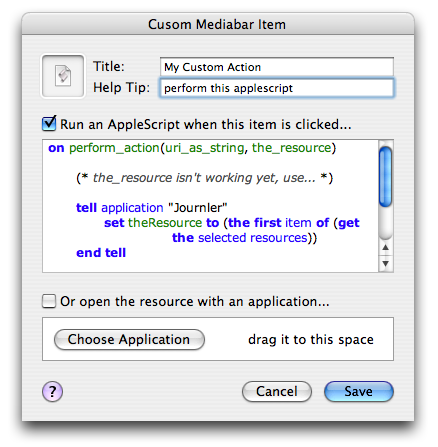

Built-in Media Support
Built-in Media Support
The Customizable Mediabar
At the top of each media viewer you wil find the customizable media bar. The media bar is like a miniature toolbar that belongs to the media viewer. The default installation includes buttons for getting information about the resource, opening the resource in the Finder or launching it with its default application. You may customize the media bar individually for each type of media Journler supports, adding your own actions using 3rd party applications or AppleScrpt.
Begin a customizaton by right-clicking on the mediabar. From the context menu select Add Custom Item. The Custom Mediabar Item dialog that begins is a simple enough affair, although to take full advantage of its power you will want to be familiar with AppleScript. Specify a title and tooltip, replace the default icon and set the script that will be called when your mediabar item is pressed. Alternatively, you may specify an application with which to open the file-based resource. When you're finished save your changes. Journler adds the mediabar item to the mediabar for this particular file type.
A few important notes. The title is not currently used for your custom mediabar item, so be sure to include a helpful tooltip. Additionally, the code which passes the selected resource to the AppleScript handler is not working properly. Instead of using the variables provided, call the AppleScript command get selected resources on the Journler application.
Opening Journler Media in 3rd Party Applications
If you do not want to use Journler to view the files and links you add to your entries, that's no problem. In media preferences set Journler to view media in an external editor or open all media in a new window. You can do the same on the fly. Hold down the option and command keys when clicking a media link and Journler will open it in a new window. Hold down the command key alone and Journler will launch the default application for that media's type. Read more about keyboard modifiers.For more information on file and media management, refer to resources.